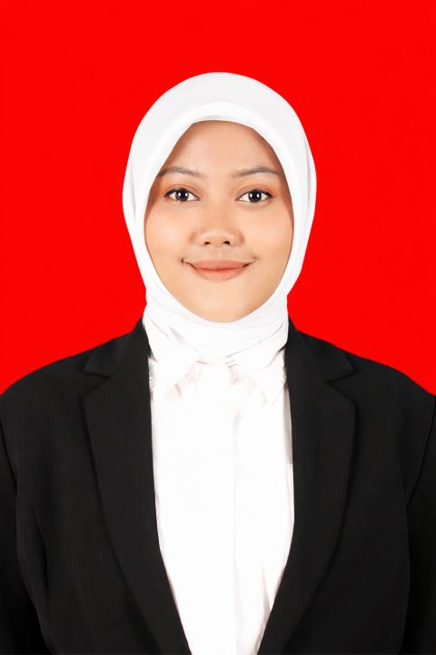
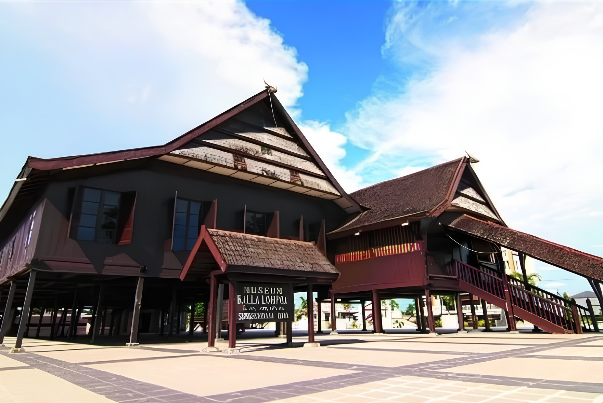
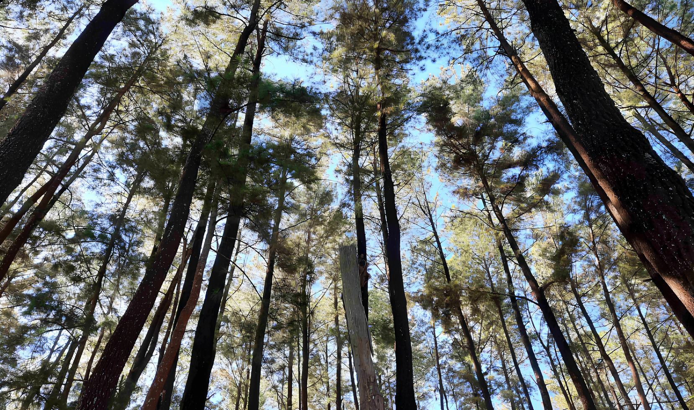

Menyiarkan Harapan, Merawat Ingatan.
Kisah & Perjalanan Hidup
Lahir di Makassar pada 27 Maret 2002, saya tumbuh dan berkembang di lingkungan keluarga pendidik yang hangat. Kedua orang tua saya adalah guru SMK, dan kakak saya mengabdi sebagai dosen di salah satu kampus di Makassar. Sebagai anak bungsu dari tiga bersaudara dengan selisih usia yang cukup jauh, saya beruntung memiliki ruang istimewa untuk mengamati, memilah, dan menyerap kearifan hidup—belajar tentang hal baik yang patut saya teladani maupun hal yang tidak perlu saya ikuti.
Meskipun telah lama berdomisili di Kabupaten Gowa, sebagian besar aktivitas, studi, hingga mimpi saya berpusat di Makassar. Perjalanan lintas kabupaten yang menempuh jarak dan waktu setiap harinya kini telah menjadi bagian dari ritme hidup saya.
Sebagai lulusan Komunikasi Penyiaran Islam (S.Sos) dari UIN Alauddin Makassar (2020-2024) dan alumni MAN 2 Kota Makassar (2020), kini saya melanjutkan perjuangan di program PPG Calon Guru Gelombang 1 Tahun 2026 di LPTK Universitas Negeri Makassar (UNM). Tergabung di kelas Vokasi 001 dengan bidang studi Broadcasting dan Perfilman, saya merasa berada di tempat yang paling tepat untuk mengawinkan profesionalisme penyiaran yang saya miliki dengan kompetensi pedagogis modern.
Lokasi LPTK dan PPL

Triputri Nurcahyani, S.Sos
Mahasiswa PPG Calon Guru Gel. 1 - 2026
LPTK: Universitas Negeri Makassar
Jejak Studi & Kompetensi Vokasi
PPG Calon Guru Vokasi
LPTK Universitas Negeri Makassar (2026 - Sekarang)
S1 Komunikasi Penyiaran Islam (S.Sos)
UIN Alauddin Makassar (2020 - 2024)
MAN 2 Kota Makassar
Alumni (2017 - 2020)
Fokus Keahlian Utama
Jejak Sejarah Gowa & Makassar:
Saksi Bisu Nilai Kehidupan
Berdiri di antara batas Kabupaten Gowa dan Kota Makassar, hidup saya diwarnai oleh spirit kepahlawanan Sultan Hasanuddin yang gigih, berani, serta tidak goyah dalam prinsip kebenaran. Di sisi lain, kemegahan istana kayu Balla Lompoa berdiri tegak melambangkan penjagaan memori luhur Kerajaan Gowa agar tak lekang oleh zaman.
Bagi seorang calon pendidik Broadcasting & Perfilman, sejarah bukanlah sekadar benda mati yang berdebu. Sejarah adalah rekaman kehidupan yang wajib kita rawat. Semangat juang kepahlawanan dan keagungan tradisi inilah yang melandasi komitmen saya untuk "merawat ingatan" melalui lensa kamera, "menyebarkan" nilai-nilai kebaikan lewat media siar modern, dan "mengajar" dengan kehangatan hati demi membentuk masa depan generasi bangsa yang unggul.

Istana Balla Lompoa
Simbol keteguhan identitas kultural dan saksi kejayaan peradaban Kerajaan Gowa.

Hutan Pinus Bissoloro
Keheningan pinus dataran tinggi Gowa yang mengajarkan kedamaian dan ketenangan berpikir.
"Mendidik adalah seni merawat ingatan; bagaikan lensa kamera yang menangkap kebenaran sejarah dan frekuensi penyiaran yang menyebarkan kebaikan, saya mengajar untuk mengabadikan nilai luhur masa lalu dan menyiarkan harapan masa depan."
— Triputri Nurcahyani, S.Sos
Artefak Pembelajaran
Analisis mendalam dan bukti aksi nyata dari setiap siklus PPL Terbimbing.
Memuat Judul...
Konteks
Loading...
Tujuan
Loading...
Kelebihan
Loading...
Kekurangan
Loading...
Refleksi Kritis Penyusunan & Penerapan Produk
a. Kendala Proses Penyusunan Produk Pembelajaran:
b. Teori atau Konsep Pedagogi yang Diadopsi:
c. Faktor Keberhasilan Penerapan Produk Pembelajaran:
d. Perubahan Komponen yang Memungkinkan untuk Kelas Berbeda:
File Bukti & Berkas Pendukung
Lembar Penilaian (L7 & L8)
Data berikut menunjukkan progres perkembangan kompetensi saya dari penilaian Guru Pamong (GP) dan Dosen Pembimbing Lapangan (DPL) selama 3 siklus praktik.
Penilaian Perangkat Pembelajaran (L7)
Evaluasi menyeluruh penyusunan perangkat pembelajaran (RPP/Modul Ajar) berbasis HOTS, TPACK, serta diferensiasi konten dan aktivitas.
Penilaian Praktik Mengajar (L8)
Evaluasi langsung di kelas terkait metodologi penyampaian materi, pemantauan keaktifan siswa, penguasaan kelas, dan penutupan pembelajaran reflektif.
Refleksi & Catatan Evaluasi Pembimbing
"Dalam merancang perangkat, pastikan untuk selalu presisi dalam menyesuaikan sintaks langkah-langkah pembelajaran dengan metode pembelajaran yang dipilih agar alur instruksional berjalan runtut."
"Dalam pelaksanaan praktik mengajar, mahasiswa perlu berlatih untuk lebih menguasai lagi suasana kelas, mempertahankan fokus siswa, serta sigap merespons dinamika kelas yang tidak terduga."
Tren Perkembangan Nilai GP & DPL
78%
85%
92%
Model Guru Masa Depan
Misi Pribadi
- ▹ Menciptakan ekosistem belajar yang aman dan berpihak pada anak.
- ▹ Menjadi praktisi reflektif melalui evaluasi diri berkelanjutan.
- ▹ Berkolaborasi dengan komunitas praktisi industri untuk inovasi.
- ▹ Terus membuka diri untuk menerima pengetahuan baik secara profesional dan pedagogik.
Kompetensi Target
Pedagogik Unggul Target 90%
Profesional Adaptif Target 95%
Karakter Guru
Empati Profesional
Memahami karakteristik, kesiapan, dan potensi belajar setiap murid secara holistik.
Reflektif & Terbuka
Siap menerima umpan balik kritis dan mengevaluasi kinerja mengajar untuk perbaikan.
Adaptif & Lincah
Adaptif, siap beradaptasi sesuai dengan perkembangan zaman dan dinamika lingkungan kelas.